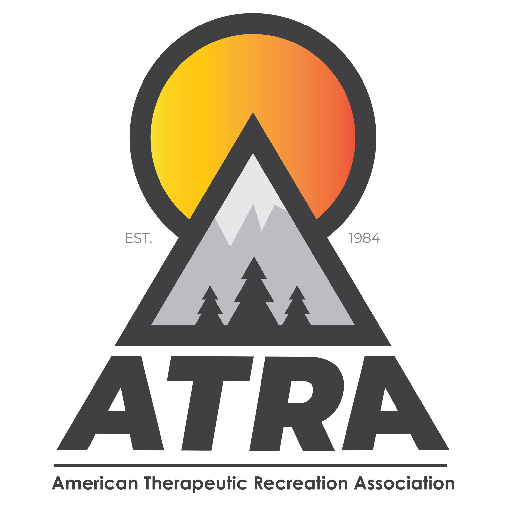
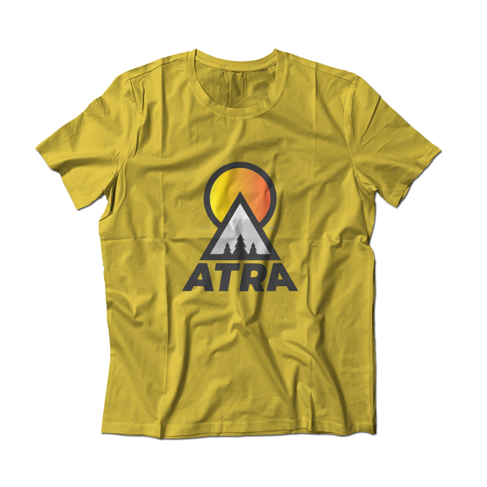
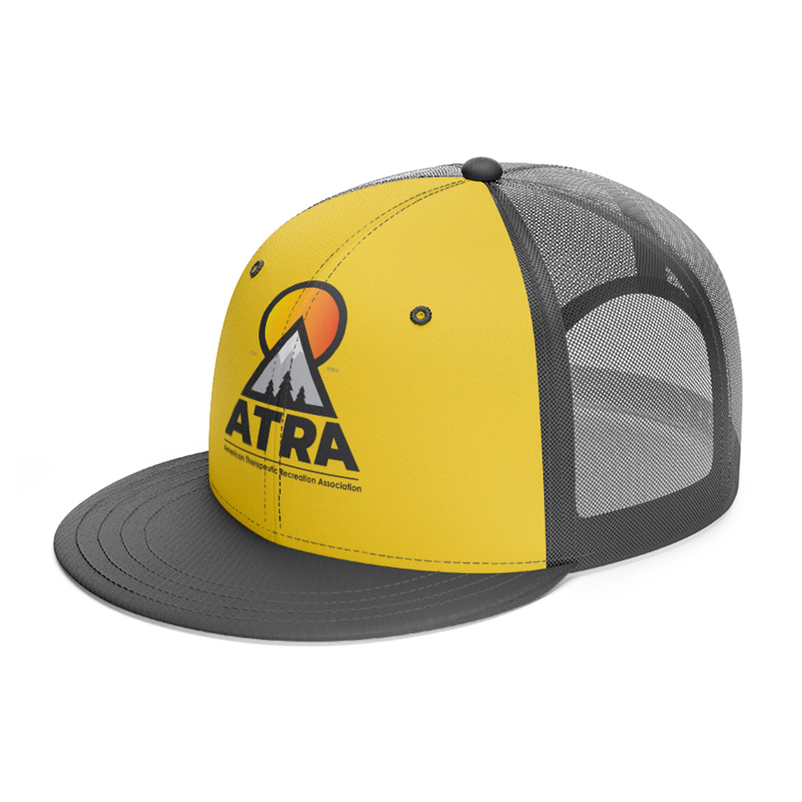
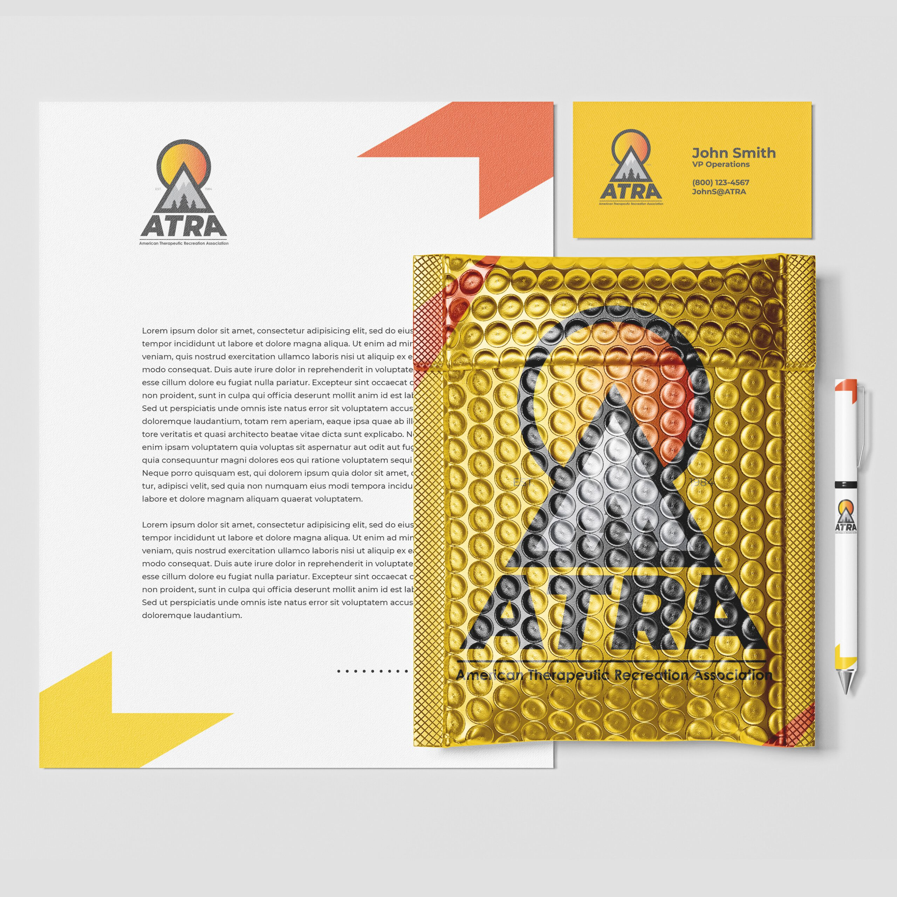

ATRA
Brand identity refresh and merchandise design for the American Therapeutic Recreation Association — the national voice for recreational therapy professionals.

Brand identity refresh and merchandise design for the American Therapeutic Recreation Association — the national voice for recreational therapy professionals.
ATRA — the American Therapeutic Recreation Association — is the leading professional organization for recreational therapists nationwide. They advocate for the field, provide continuing education, and support thousands of credentialed therapists working in hospitals, rehab centers, and community programs. But their visual identity hadn't kept pace with the profession's growth. The existing brand materials looked dated, and their merchandise — a key revenue stream and member engagement tool — lacked the design quality that a national association should project.
Professional associations live on member pride. When therapists wear ATRA gear at conferences, on campus, or in clinical settings, it's a signal of professional identity. If the merch looks like an afterthought, the message is that the profession itself is an afterthought. ATRA needed brand collateral and apparel that their members would actually want to wear — designs that elevate recreational therapy's visibility and make practitioners feel proud to represent the field.
I developed a refreshed brand identity system and a merchandise line designed to work across ATRA's touchpoints — from conference booths and member communications to their online store. The logo system was built for versatility: clean enough for formal publications, bold enough to carry on apparel and promotional materials. Every design decision was made to elevate the profession's visibility and give ATRA a visual presence that matches the seriousness and passion of the work their members do every day.
The result: a cohesive brand system and merchandise line that ATRA members are proud to wear — turning every conference, clinic, and campus into an opportunity to advocate for the field.



